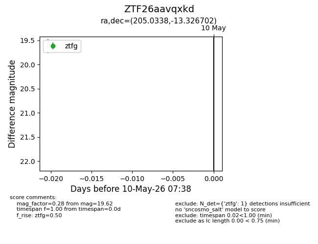
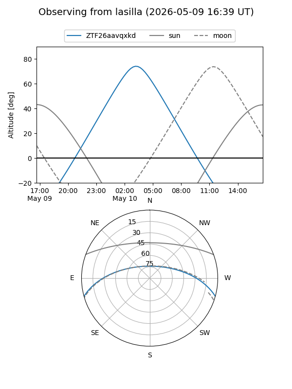
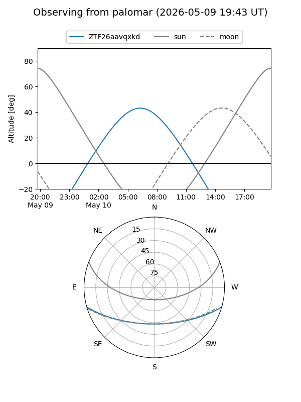

ZTF26aavqxkd
Target ZTF26aavqxkd at 2026-05-10 07:39
Aliases and brokers:
FINK: link
Lasair: link
ALeRCE: link
alt names
ZTF26aavqxkd (ztf,fink_ztf)
Coordinates:
equatorial (ra, dec) = 205.0338,-13.32670
equatorial (HMS+DMS) = 13:40:08.11,-13:19:36.13
galactic (l, b) = (320.7391,+47.85422)
Flags:
Photometry:
last ztfg=19.62
1 ztfg detections
Lightcurve

Visibility


Additional plots